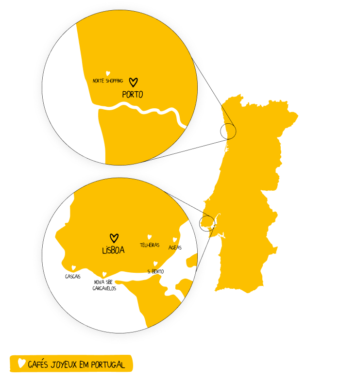
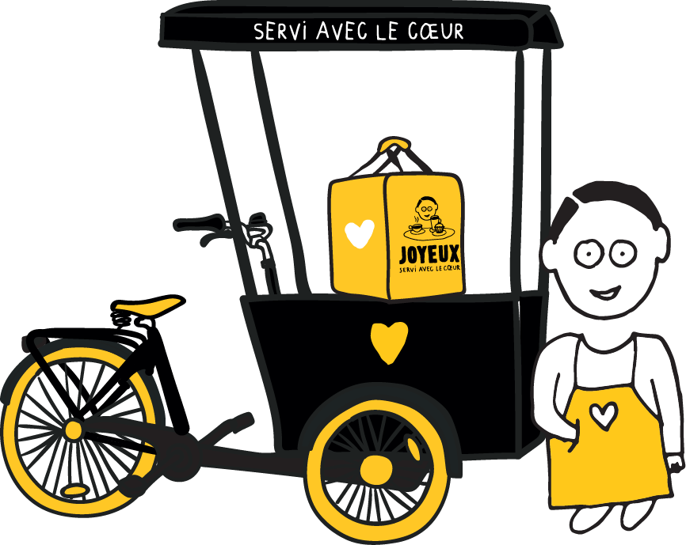
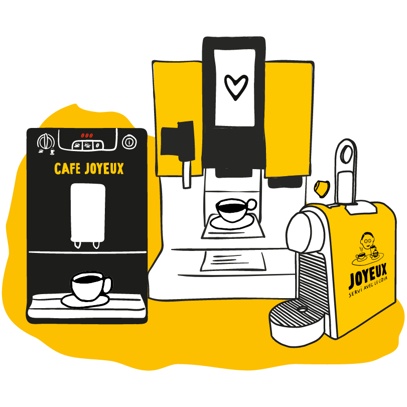
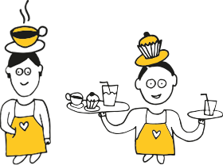

O Café Joyeux é a primeira família de cafés-restaurantes solidários e inclusivos, que emprega e forma pessoas com Dificuldades Intelectuais e do Desenvolvimento.

961 056 550
No Café Joyeux toda a produção é caseira, realizada pelos colaboradores Joyeux com produtos frescos e da estação. O Café Joyeux de São Bento e o Café Joyeux de Cascais dispõem de serviço de takeaway e de UberEats para que possa desfrutar da sua deliciosa comida Joyeux em casa ou no trabalho. Tudo através de um simples clique!
DESCUBRA OS NOSSOS CAFÉS-RESTAURANTES961 366 210

Sabia que pode desfrutar do nosso serviço de catering para tornar o seu evento ainda mais especial e memorável?
DESCUBRA A NOSSA OFERTA DE CATERING

Uma oferta personalizada de acordo com as suas necessidades
Quer fazer uma pausa alegre na sua empresa? Beba o seu café Joyeux no escritório e apoie a inclusão de pessoas com dificuldades intelectuais e do desenvolvimento
DESCUBRA A OFERTA PARA EMPRESAS
O Café Joyeux permite a cada um dos colaboradores Joyeux ganhar confiança, experiência e sentir-se totalmente integrado no seu trabalho
100% das receitas são diretamente reinvestidas na abertura de novos cafés-restaurantes. Assim, cada Café contribui diretamente para a inclusão
FAÇA PARTE